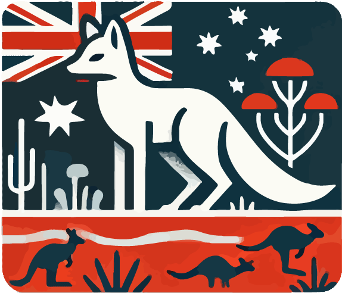

Center for Biodiversity Analysis: Gen3sis Workshop 2024
Author
Alexander Skeels and Oskar Hagen
Published
Invalid Date
Welcome to the CBA sponsored workshop on the Gen3sis biodiversity simulation software! We’ll be using this Quarto book to navigate through the workshop practicals. Quarto allows us to embed R code throughout. The workshop will be (roughly) following this program. Enjoy!
Program

ANU
Day 1
Time
Event
09:00 - 09:50
👋☕ Welcome (Platypus Room) - Coffee, introductions, and overview of Gen3sis workshop
09:50 - 11:00
🎓 Lecture 1 - Oskar Hagen (Eucalyptus Room): From German Romanticism to modern computational biodiversity models
11:00 - 11:15
☕ Coffee Break
11:15 - 12:00
🛠️ Practical 1 - Gettin’ Started: Installation and Set Up